PyTorch学习记录
第一章 PyTorch基础配置与介绍
搭建环境
- Python3.9
- PyTorch 2.4.1
- CUDA 12.1
- NVIDIA GeForce RTX 4060 Laptop GPU
Anaconda常用命令
创建环境：conda create -n your_env_name python=X.X （X.X为python版本）
eg: conda create -n pytorch_tutorial python=3.7
激活环境：source activate your_env_name
eg: source activate pytorch_tutorial
退出环境：source deactivate
删除环境：conda remove -n your_env_name –all
eg: conda remove -n pytorch_tutorial —all
查看已有虚拟环境：conda env list / conda info -e
PyCharm常用快捷键
- 批量注释：Ctrl + /
- 快速查看文档：Ctrl + q
- 搜索：Ctrl+f
- 运行：Shift + F10
- Tab / Shift + Tab 缩进、不缩进当前行
- Ctrl + D 复制选定的区域或行
- Ctrl + Y 删除选定的行
JupyterNotebook常用快捷键
命令模式：
- 插入单元格： A 键上方插入，B 键在下方插入
- 合并单元格：选中多个单元格，Shift + M
- 显示行号：L
- 删除单元格：连续按两次D
- 剪切单元格：X。 通常我用X代替删除，毕竟只用按一个键，哈哈。
- 复制粘贴单元格： C/V
- 撤销删除的单元格：要撤消已删除的单元格，请按 Z 键
编辑模式：
- 运行单元格：Ctrl + Enter
- 运行并创建新单元格：Alt + Enter
- 分割单元格：光标放到想要分割的地方，Ctrl + Shift + -
- 函数详情：Shift+Tab （注意，要把模块导入才会提示函数详情！）
PyTorch 2.0特性
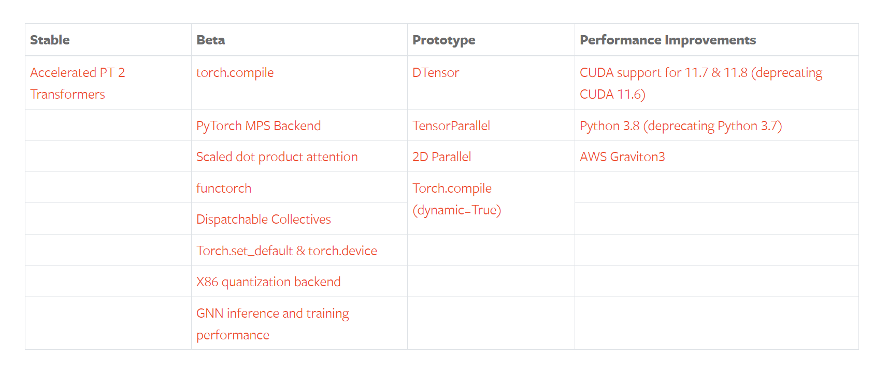
其中最大的特点是torch.compile的发布，它是pytorch走向编译范式的重要模块，也是pytorch2.0发布会重点介绍的部分。
下面围绕torch.compile展开梳理几个与编译相关的核心特性。
特性一：torch.compile
torch.complie目的是提高计算速度。通常使用只需要一行代码即可完成，例如：model = torch.compile(model)。
之所以一行能让整个pytorch运算提速，是因为complie是一个高级接口，它背后使用了 TorchDynamo、AOTAutograd 和TorchInductor 等工具链来对模型的计算图进行分析、优化和编译。
特性二：TorchDynamo
TorchDynamo是支撑torch.compile的工具，它可进行快速地捕获计算图（Graph），计算图在深度学习中至关重要，它描述了数据在网络中的流动形式。在早期，pytorch团队已经对计算图的捕获进行了一些列工具开发，例如TorchScript。但TorchDynamo相较于之前的工具，在速度上有了更大提升，并且在99%的情况下都能正确、安全地获取计算图。
特性三：AOTAutograd
AOTAutograd 的目的是希望在计算运行之前，捕获计算的反向传播过程，即“ahead of time Autograd”。AOTAutograd 通过重用和扩展PyTorch的现有自动微分系统，实现提高训练速度。
特性四：TorchInductor
TorchInductor 是一个新的编译器后端，可以为多个硬件平台进行生成优化的代码，例如针对NVIDIA和AMD的GPU，使用OpenAI 的Triton语言（一门GPU编程语言，不是NVIDIA的推理框架）作为目标语言，针对CPU，可生成C++代码。由此可见，TorchInductor 能够为多种加速器和后端生成快速的代码。
特性五：PrimTorch
PrimTorch 是将PyTorch底层操作符（operators）进行归约、精简，使下游编译器开发更容易和高效。PyTorch包含1200+操作符，算上重载，有2000+，操作符过多，对于后端和编译器开发式不友好的。为了简化后端开发，提高效率，PrimTorch项目整理了两大类基础操作符，包括：
- Prim操作符：相对底层的约250个操作符
- ATen操作符：约750个操作符，适合直接导出
小结：TorchDynamo、AOTAutograd、TorchInductor和PrimTorch 都在为PyTorch的计算效率服务，让PyTorch计算速度更快、更pythonic。
torch.compile 接口
torch.compile是采用TorchDynamo和指定的后端对模型/计算进行优化，期望使模型/函数在未来应用时，计算速度更快。
使用上，torch.compile接收一个可调用对象（Callable）， 返回一个可调用对象（Callable），对于用户，只需要一行代码，调用compile进行优化。
参数：
- model (Callable) : Module或者是Function， 这个Function可以是pytorch的函数，也可以是numpy语句，当前compile还支持numpy的加速优化
- mode：优化模式的选择，目前（2024年7月16日）提供了四种模式，区别在于不同的存储消耗、时间消耗、性能之间的权衡。
- default : 默认模式， 在性能和开销之间有不错的平衡
- reduce-overhead：这个模式旨在减少使用CUDA图时的Python开销。该模式会增加内存占用，提高速度，并且不保证总是有效。目前，这种方法只适用于那些不改变输入的CUDA图。
- max-autotune：基于Triton的矩阵乘法和卷积来提高性能
- max-autotune-no-cudagraphs： 与max-autotune一样，但是不会使用CUDA计算图
- fullgraph (bool) : 是否将整个对象构建为单个图（a single graph），否认是False，即根据compile的机制拆分为多个子图。
- dynamic (bool or None) : 是否采用动态形状追踪，默认为None，对于输入形状是变化的，compile会尝试生成对应的kernel来适应动态形状，从而减少重复编译，但并不是所有动态形状都能这样操作，随缘吧，这个过程可以设置TORCH_LOGS=dynamic来观察日志信息。
- backend (str or Callable) : 选择所用的后端，默认是”inductor”，可以较好平衡性能和开销，可用的后端可以通过torch._dynamo.list_backends()查看，注册自定义后端库，可参考 https://pytorch.org/docs/main/compile/custom-backends.html
- options (dict): 用于向后端传入额外数据信息，key-value可以自定义，只要后端可读取即可，这个参数预留了较好的接口。
- disable (bool): Turn torch.compile() into a no-op for testing
第二章 PyTorch核心模块
PyTorch模块结构
位置：D:\Software\anaconda3\envs\pytorch\Lib\site-packages\torch
_pycache _
该文件夹存放python解释器生成的字节码，后缀通常为pyc/pyo。其目的是通过牺牲一定的存储空间来提高加载速度，对应的模块直接读取pyc文件，而不需再次将.py语言转换为字节码的过程，从此节省了时间。
_C
它是辅助C语言代码调用的一个模块，该文件夹里存放了一系列pyi文件，pyi文件是python用来校验数据类型的，如果调用数据类型不规范，会报错。
include
上面讲到pytorch许多底层运算用的是C++代码，那么C++代码在哪里呢？ 它们在这里，在include/torch/csrc文件夹下可以看到各个.h/.hpp文件，而在python库中，只包含头文件，这些头文件就在include文件夹下。
lib
torch文件夹中最重要的一个模块，torch文件夹占4.23GB的空间，98%的内容都在lib中，占了4.15GB空间。
lib文件夹下包含大量的.lib和 .dll文件（分别是静态链接库和动态链接库），这些底层库都会被各类顶层python api调用。
autograd
该模块是pytorch的核心模块与概念，它实现了梯度的自动求导，极大地简化了深度学习研究者开发的工作量，开发人员只需编写前向传播代码，反向传播部分由autograd自动实现，再也不用手动去推导数学公式，然后编写代码了。在早期的深度学习框架中是没有这个功能的，例如caffe，它需要手动编写反向传播的公式代码。
nn
这个模块是99%pytorch开发者使用频率最高的模块，搭建网络的网络层就在nn.modules里边。在D:\Software\anaconda3\envs\pytorch\Lib\site-packages\torch\nn\modules里有许多熟悉的网络层。
onnx
pytorch模型转换到onnx模型表示的核心模块，进入文件夹可以看到大量的opset**.py。
Opset 是 ONNX 中的一组操作符的版本集合。每个操作符都有一个与之相关的版本号，这个版本号被称为 Opset version。Opset 版本的变化通常会引入新的操作符，或者是对现有操作符的修改（例如，增加新功能或修复问题）。这意味着，不同版本的 ONNX 可能会支持不同的操作符和特性。
当使用 PyTorch 将模型导出为 ONNX 格式时，PyTorch 会根据当前的 ONNX 版本来生成 ONNX 模型，并且指定一个 Opset 版本。不同版本的 ONNX 可能支持不同的操作符，因此 PyTorch 在将模型转换为 ONNX 时会选择一个合适的 Opset 版本，以确保所有的操作都能够被目标框架理解和支持。
optim
优化模块，深度学习的学习过程，就是不断的优化，而优化使用的方法函数，都暗藏在了optim文件夹中，进入该文件夹，可以看到熟悉的优化方法：“Adam”、“SGD”、“ASGD”等，以及非常重要的学习率调整模块，lr_scheduler.py。
utils
utils是各种软件工程中常见的文件夹，其中包含了各类常用工具，其中比较关键的是data文件夹，tensorboard文件夹，这些工具都将在后续章节详细展开。第三章将展开data里的dataloader与dataset等数据读取相关的模块。
以上是torch库，针对不同的应用方向，pytorch还提供了torchvision\torchtext\torchaudio等模块。
torchvision
类似地，我们来到D:\Software\anaconda3\envs\pytorch\Lib\site-packages\torchvision文件夹下看看有什么模块。
datasets
这里是官方为常用的数据集写的数据读取函数，例如常见的cifar, coco, mnist,svhn,voc都是有对应的函数支持，可以方便地使用轮子。
models
这里是宝藏库，里边存放了经典的、可复现的、有训练权重参数可下载的视觉模型，例如分类的alexnet、densenet、efficientnet、mobilenet-v1/2/3、resnet等，分割模型、检测模型、视频任务模型、量化模型。这个库中的模型实现，也是大家可以借鉴学习的好资料，可以模仿它们的代码结构、函数、类的组织。
ops
视觉任务特殊的功能函数，例如检测中用到的 roi_align, roi_pool，boxes的生成，以及focal_loss实现，都在这里边有实现。
transforms
数据增强库，相信99%的初学者用到的第一个视觉数据增强库就是transforms了，transforms是pytorch自带的图像预处理、增强、转换工具，可以满足日常的需求。但无法满足各类复杂场景，因此后续会介绍更强大的、更通用的、使用人数更多的数据增强库——Albumentations。
通过torchvision\transforms\transforms.py , 可以看到 torchvision包含了这些功能
1 | __all__ = [ |
新冠肺炎X光分类
上一节，我们学习了pytorch python API的结构，本节将以一个具体的案例介绍pytorch模型训练流程
案例背景
2020年1月底2月初的时候，新冠在国内/外大流行。而确定一个人是否患有新冠肺炎，是尤为重要的事情。新冠肺炎的确诊需要通过核酸检测完成，但是核酸检测并不是那么容易完成，需要医护人员采样、送检、在PCR仪器上进行检测、出结果、发报告等一系列复杂工序，核酸检测产能完全达不到当时的检测需求。在疫情初期，就有医生提出，是否可以采用特殊方法进行诊断，例如通过CT、X光的方法，给病人进行X光摄影，几分钟就能看出结果，比核酸检测快了不少。于是，新冠肺炎患者的胸片X光数据就不断的被收集，并发布到网上供全球科学家使用，共同抗击新冠疫情。这里就采用了github上covid-chestxray-dataset的数据，同时采用了正常人的X光片，来自于zoogzog/chexnet: Implementation of the CheXNet network (PyTorch)
由于本案例目的是pytorch流程学习，为了简化学习过程，数据仅选择了4张图片，分为2类，正常与新冠，训练集2张，验证集2张。标签信息存储于TXT文件中。具体目录结构如下：
1 | ├─imgs |
建模思路
这是一个典型的图像分类任务，此处采用面向过程的思路进行代码编写。
step 1 数据
需要编写代码完成数据的读取，转换成模型能够读取的格式。这里涉及pytorch的dataset，dataloader，transforms等模块。以及需要清楚地知道pytorch的模型需要怎样的格式。
首先，需要将数据在硬盘上的信息，如路径，标签读取并存储起来，然后被使用，这一步骤主要是通过COVID19Dataset这个类。类里有四个函数，除了Dataset类必须要实现的三个外，我们通过get_img_info()函数实现读取硬盘中的路径、标签等信息，并存储到一个列表中。后续大家可以根据不同的任务情况在这个函数中修改，只要能获取到数据的信息，供getitem函数进行读取。
1 | # step 1/4 : 数据模块 |
接着，需要设置对图像进行预处理(Preprocess)的操作，这里为了演示，仅采用resize 和 totensor两个方法，并且图片只需要缩放到8x8的大小，并不需要224,256,448,512,1024等大尺寸。(totensor与下一小节内容强相关)
1 | root_dir = r"C:\Users\WZX\Desktop\PyTorch-Tutorial-2nd\data\datasets\covid-19-demo" # path to datasets——covid-19-demo |
下一步，使用dataloader进行封装，dataloader是一个数据加载器，提供诸多方法进行数据的获取，如设置一个batch获取几个样本，采用几个进程进行数据读取，是否对数据进行随机化等功能。
1 | train_data = COVID19Dataset(root_dir=img_dir, txt_path=path_txt_train, transform=transforms_func) |
step 2 模型
数据模块构建完毕，需要输入到模型中，所以我们需要构建神经网络模型，模型接收数据并前向传播处理，输出二分类概率向量。此处需要用到nn.Module模块和nn下的各个网络层进行搭建模型，模型的搭建就像搭积木，一层一层地摞起来。模型完成的任务如下：下一张分辨率为4x4的图像输入到模型中，模型经过运算，输出二分类概率。
运算过程是构建一个极其简单的卷积神经网络，仅仅包含两个网络层，第一层是包含1个3*3卷积核的2d卷积，第二层是两个神经元的全连接层（pytorch也叫linear层）。模型的输入被限制在了8x8，原因在于linear层设置了输入神经元个数为36， 8x8与36之间是息息相关的，他们之间的关系是什么？这需要大家对卷积层有一定了解。（大家可以改一下36，改为35，或者transforms_func()中的resize改为9x9，看看会报什么错误，这个错误是经常会遇到的报错）
1 | 卷积层和全连接层之间的关系如下：在经过卷积层后，输入图像的尺寸会发生变化。假设输入图像的尺寸为 8x8，经过 3x3 的卷积核后，输出的特征图尺寸会变为 6x6（假设没有填充和步幅为 1）。然后，这个 6x6 的特征图会被展平成一个 36 维的向量，作为全连接层的输入。因此，`Linear` 层的输入神经元个数需要设置为 36。 |
1 | # step 2/4 : 模型模块 |
step3 优化
模型可以完成前向传播之后，根据什么规则对模型的参数进行更新学习呢？这就需要损失函数和优化器的搭配了，损失函数用于衡量模型输出与标签之间的差异，并通过反向传播获得每个参数的梯度，有了梯度，就可以用优化器对权重进行更新。这里就要涉及各种LossFunction和optim中的优化器，以及学习率调整模块optim.lr_scheduler。
这里，采用的都是常用的方法：交叉熵损失函数（CrossEntropyLoss）、随机梯度下降法（SGD）和按固定步长下降学习率策略（StepLR）。
1 | # step 3/4 : 优化模块 |
在深度学习中，epoch 是一个术语，用来表示整个训练数据集被完整地传递过神经网络一次。换句话说，一个 epoch 就是对整个训练数据集进行一次完整的迭代。在每个 epoch 期间，模型会看到每一个训练样本一次，并根据这些样本进行参数更新。
在训练过程中，通常会进行多个 epoch，以便模型能够多次学习和调整其参数，从而提高其性能。每个 epoch 之后，模型的参数会根据损失函数的反馈进行更新，以减少预测误差。
在上面的代码中，
scheduler = optim.lr_scheduler.StepLR(optimizer, gamma=0.1, step_size=50)
表示每经过 50 个 epoch，学习率会乘以 0.1。这种学习率调度策略可以帮助模型在训练过程中逐步减小学习率，从而更好地收敛到最优解。
step4 迭代
有了模型参数更新的必备组件，接下来需要一遍又一遍地给模型喂数据，监控模型训练状态，这时候就需要for循环，不断地从dataloader里取出数据进行前向传播，反向传播，参数更新，观察loss、acc，周而复始。当达到条件，如最大迭代次数、某指标达到某个值时，进行模型保存，并break循环，停止训练。
1 | # step 4/4 : 迭代模块 |
一系列问题
图像数据是哪用一行代码读取进来的？
在本节代码中，图像数据是通过数据加载器 train_loader和 valid_loader读取进来的。具体来说，图像数据是在以下两行代码中被读取的：
1 | for data, labels in train_loader: |
这行代码从 train_loader中读取训练数据和对应的标签。
1 | for data, label in valid_loader: |
这行代码从 valid_loader 中读取验证数据和对应的标签。
train_loader和 valid_loader是在之前的代码中定义的 DataLoader 对象，它们负责从数据集 train_data 和 valid_data 中批量读取数据。具体定义如下：
1 | train_loader = DataLoader(dataset=train_data, batch_size=2) |
这些 DataLoader 对象会自动从数据集中读取图像数据并进行预处理，然后在训练和验证过程中按批次提供数据。
transforms.Compose是如何工作对图像数据进行转换的？
transforms.Compose 是 PyTorch 中 torchvision.transforms 模块提供的一个类，用于将多个图像变换操作组合在一起。它接受一个变换操作列表，并返回一个函数，该函数会按顺序对输入图像应用这些变换操作。
在本节代码中，transforms.Compose 被用来定义图像预处理操作：
1 | transforms_func = transforms.Compose([ |
让我们逐步解释这些变换操作是如何工作的：
transforms.Resize((8, 8)):- 这个变换操作会将输入图像的大小调整为 8x8 像素。无论输入图像的原始大小是多少，它都会被缩放到指定的大小
(8, 8)。 - 例如，如果输入图像的大小是 256x256 像素，经过这个变换后，图像的大小会变为 8x8 像素。
- 这个变换操作会将输入图像的大小调整为 8x8 像素。无论输入图像的原始大小是多少，它都会被缩放到指定的大小
transforms.ToTensor():- 这个变换操作会将输入图像从 PIL 图像或 numpy 数组转换为 PyTorch 的张量（tensor）。
- 转换后的张量会被标准化到 [0, 1] 范围内，即每个像素值会被除以 255（如果原始图像是 8 位图像）。
- 例如，如果输入图像是一个 8 位的 RGB 图像，经过这个变换后，图像会被转换为一个形状为
(C, H, W)的张量，其中C是通道数（例如 3 表示 RGB 图像），H是高度，W是宽度。
当你在定义数据集时，将这个组合变换函数传递给 COVID19Dataset类的transform参数：
1 | train_data = COVID19Dataset(root_dir=img_dir, txt_path=path_txt_train, transform=transforms_func) |
在数据集类中，每次加载图像时，都会按顺序应用这些变换操作：
1 | if self.transform: |
这样，每个图像在被加载时都会先被调整大小，然后被转换为张量格式，准备好用于训练或验证模型。
ToTensor又有哪些操作？
transforms.ToTensor 是 PyTorch 中 torchvision.transforms 模块提供的一个类，用于将图像从 PIL 图像或 numpy 数组转换为 PyTorch 的张量（tensor）。它主要执行以下操作：
转换数据类型：
- 将输入图像的数据类型从 PIL 图像或 numpy 数组转换为 PyTorch 的
torch.Tensor类型。
- 将输入图像的数据类型从 PIL 图像或 numpy 数组转换为 PyTorch 的
调整维度顺序：
- 将图像的维度顺序从
(H, W, C)（高度，高度，通道）调整为(C, H, W)（通道，高度，高度），这是 PyTorch 中张量的默认维度顺序。 - 例如，一个形状为
(256, 256, 3)的 RGB 图像会被转换为形状为(3, 256, 256)的张量。
- 将图像的维度顺序从
归一化像素值：
- 将图像的像素值从 [0, 255] 范围（如果是 8 位图像）归一化到 [0, 1] 范围。
- 具体来说，每个像素值会被除以 255。
- 例如，一个像素值为 128 的像素在转换后会变为 128 / 255 ≈ 0.502。
以下是 transforms.ToTensor 的具体实现：
1 | class ToTensor: |
F.to_tensor 是 torchvision.transforms.functional 模块中的一个函数，它实现了上述操作：
1 | def to_tensor(pic): |
总结：
transforms.ToTensor将图像从 PIL 图像或 numpy 数组转换为 PyTorch 张量。- 它调整图像的维度顺序，从
(H, W, C)到(C, H, W)。 - 它将像素值归一化到 [0, 1] 范围。
自己如何编写Dataset？
编写自定义的 Dataset类需要继承 torch.utils.data.Dataset 并实现以下三个方法：
init: 初始化数据集，通常包括加载数据文件路径、标签等信息。
getitem: 根据索引返回数据和标签。
len: 返回数据集的大小。
以下是一个自定义 Dataset类的示例，展示了如何编写一个用于加载图像数据的自定义数据集：
1 | import os |
在这个示例中，我们定义了一个名为 CustomDataset 的类，并实现了以下方法：
init: 初始化数据集，加载数据文件路径和标签，并存储在 img_info列表中。
_get_img_info: 从文本文件中读取图像路径和标签，并存储在 img_info列表中。
getitem: 根据索引返回图像和标签。图像会被读取并转换为灰度图，如果提供了预处理变换，则应用这些变换。
len: 返回数据集的大小。
通过这种方式，你可以轻松地编写自定义的 Dataset类来加载和预处理你的数据。
DataLoader有什么功能？如何使用？有什么需要注意的？
DataLoader 是 PyTorch 中 torch.utils.data 模块提供的一个类，用于将数据集封装成一个可迭代对象，方便进行批量数据加载、打乱数据顺序、多线程加载等操作。它在训练和验证模型时非常有用，可以提高数据加载的效率。
功能
- 批量加载数据：将数据集分成小批量进行加载，减少内存占用，提高训练效率。
- 打乱数据顺序：在每个 epoch 开始时打乱数据顺序，防止模型过拟合。
- 多线程加载数据：使用多个线程并行加载数据，提高数据加载速度。
- 自动化数据预处理：可以在加载数据时自动应用预处理变换。
使用方法
以下是一个使用 DataLoader 的示例：
1 | import torch |
需要注意的事项
batch_size：设置每个批次加载的数据量。根据你的 GPU 内存大小和模型复杂度选择合适的batch_size。shuffle：设置为True时，在每个 epoch 开始时打乱数据顺序，防止模型过拟合。num_workers：设置用于数据加载的子进程数量。合理设置num_workers可以提高数据加载速度，但设置过高可能会导致系统资源不足。pin_memory：设置为True时，DataLoader 会将数据加载到 CUDA 固定内存中，加快数据传输速度。通常在使用 GPU 训练时设置为True。drop_last：设置为True时，如果数据集大小不能被batch_size整除，则丢弃最后一个不完整的批次。
通过合理使用 DataLoader，可以显著提高数据加载和训练的效率。
模型如何按自己的数据流程搭建？
要按自己的数据流程搭建模型，通常需要以下几个步骤：
- 准备数据：定义数据集类，加载和预处理数据。
- 定义模型：构建神经网络模型。
- 设置损失函数和优化器：选择合适的损失函数和优化器。
- 训练模型：编写训练循环，进行前向传播、计算损失、反向传播和参数更新。
- 验证模型：在验证集上评估模型性能。
nn有哪些网络层可以调用？
PyTorch 的 torch.nn 模块提供了多种神经网络层，可以用于构建各种类型的神经网络模型。以下是一些常用的网络层：
卷积层
nn.Conv1d：一维卷积层nn.Conv2d：二维卷积层nn.Conv3d：三维卷积层nn.ConvTranspose1d：一维转置卷积层（反卷积）nn.ConvTranspose2d：二维转置卷积层（反卷积）nn.ConvTranspose3d：三维转置卷积层（反卷积）
池化层
nn.MaxPool1d：一维最大池化层nn.MaxPool2d：二维最大池化层nn.MaxPool3d：三维最大池化层nn.AvgPool1d：一维平均池化层nn.AvgPool2d：二维平均池化层nn.AvgPool3d：三维平均池化层nn.AdaptiveMaxPool1d：自适应一维最大池化层nn.AdaptiveMaxPool2d：自适应二维最大池化层nn.AdaptiveMaxPool3d：自适应三维最大池化层nn.AdaptiveAvgPool1d：自适应一维平均池化层nn.AdaptiveAvgPool2d：自适应二维平均池化层nn.AdaptiveAvgPool3d：自适应三维平均池化层
全连接层
nn.Linear：全连接层（线性层）
正则化层
nn.BatchNorm1d：一维批量归一化层nn.BatchNorm2d：二维批量归一化层nn.BatchNorm3d：三维批量归一化层nn.LayerNorm：层归一化层nn.GroupNorm：组归一化层nn.InstanceNorm1d：一维实例归一化层nn.InstanceNorm2d：二维实例归一化层nn.InstanceNorm3d：三维实例归一化层
激活函数层
nn.ReLU：ReLU 激活函数nn.LeakyReLU：Leaky ReLU 激活函数nn.PReLU：PReLU 激活函数nn.ELU：ELU 激活函数nn.Sigmoid：Sigmoid 激活函数nn.Tanh：Tanh 激活函数nn.Softmax：Softmax 激活函数nn.LogSoftmax：LogSoftmax 激活函数
Dropout层
nn.Dropout：Dropout 层nn.Dropout2d：二维 Dropout 层nn.Dropout3d：三维 Dropout 层
循环神经网络层
nn.RNN：循环神经网络层nn.LSTM：长短期记忆网络层nn.GRU：门控循环单元层
Transformer层
nn.Transformer：Transformer 模型nn.TransformerEncoder：Transformer 编码器nn.TransformerDecoder：Transformer 解码器nn.TransformerEncoderLayer：Transformer 编码器层nn.TransformerDecoderLayer：Transformer 解码器层
嵌入层
nn.Embedding：嵌入层nn.EmbeddingBag：嵌入袋层
其他层
nn.Flatten：展平层nn.Unflatten：反展平层nn.PixelShuffle：像素重排层nn.Upsample：上采样层nn.Identity：恒等层（不做任何改变）
这些层可以通过组合使用来构建复杂的神经网络模型。以下是一个简单的示例，展示了如何使用这些层来构建一个卷积神经网络：
1 | import torch |
在这个示例中，我们定义了一个简单的卷积神经网络 SimpleCNN，包含两个卷积层、一个池化层、两个全连接层和一个 Dropout 层。通过组合这些层，我们可以构建出各种复杂的神经网络模型。
损失函数有哪些？
在 PyTorch 中，torch.nn 模块提供了多种损失函数，用于不同类型的任务。以下是一些常用的损失函数：
回归任务
nn.MSELoss：均方误差损失（Mean Squared Error Loss），用于回归任务。nn.L1Loss：L1 损失（绝对误差损失，Mean Absolute Error Loss），用于回归任务。nn.SmoothL1Loss：平滑 L1 损失（Smooth L1 Loss），结合了 L1 和 L2 损失的优点。
分类任务
nn.CrossEntropyLoss：交叉熵损失（Cross Entropy Loss），用于多分类任务。nn.NLLLoss：负对数似然损失（Negative Log Likelihood Loss），通常与nn.LogSoftmax一起使用。nn.BCELoss：二元交叉熵损失（Binary Cross Entropy Loss），用于二分类任务。nn.BCEWithLogitsLoss：带有 Logits 的二元交叉熵损失（Binary Cross Entropy with Logits Loss），结合了nn.BCELoss和nn.Sigmoid。
序列任务
nn.CTCLoss：连接时序分类损失（Connectionist Temporal Classification Loss），用于序列到序列任务，如语音识别。
对比学习任务
nn.CosineEmbeddingLoss：余弦嵌入损失（Cosine Embedding Loss），用于度量学习任务。nn.TripletMarginLoss：三元组损失（Triplet Margin Loss），用于度量学习任务。
其他损失函数
nn.HingeEmbeddingLoss：Hinge 嵌入损失（Hinge Embedding Loss），用于度量学习任务。nn.MarginRankingLoss：边际排名损失（Margin Ranking Loss），用于排序任务。nn.MultiLabelMarginLoss：多标签边际损失（Multi-Label Margin Loss），用于多标签分类任务。nn.MultiLabelSoftMarginLoss：多标签软边际损失（Multi-Label Soft Margin Loss），用于多标签分类任务。nn.MultiMarginLoss：多边际损失（Multi-Margin Loss），用于多分类任务。
以下是一些常用损失函数的示例：
1 | import torch |
这些损失函数可以根据具体任务的需求进行选择和使用。在训练模型时，选择合适的损失函数对于模型的性能和收敛速度至关重要。
优化器是如何更新model参数的？
在 PyTorch 中，优化器负责更新模型的参数，以最小化损失函数。优化器通过反向传播计算得到的梯度来更新模型参数。以下是优化器更新模型参数的基本步骤：
- 前向传播：计算模型的输出。
- 计算损失：使用损失函数计算模型输出与目标值之间的差异。
- 反向传播：计算损失函数相对于模型参数的梯度。
- 更新参数：使用优化器根据梯度更新模型参数。
学习率调整有哪些方法？如何设置它们的参数？
在 PyTorch 中，学习率调整（Learning Rate Scheduling）是通过 torch.optim.lr_scheduler 模块实现的。学习率调整方法有很多种，常见的方法包括：
- StepLR：每隔一定的 epoch 数，将学习率乘以一个衰减因子。
- MultiStepLR：在指定的 epoch 数，将学习率乘以一个衰减因子。
- ExponentialLR：每个 epoch 将学习率乘以一个衰减因子。
- CosineAnnealingLR：使用余弦退火策略调整学习率。
- ReduceLROnPlateau：当指标停止提升时，降低学习率。
- CyclicLR：在两个边界之间循环调整学习率。
- OneCycleLR：在一个周期内调整学习率。
model.train()与model.eval()作用是什么？
model.train() 和 model.eval() 是 PyTorch 中用于设置模型在训练模式和评估模式下的两种方法。它们的主要作用是启用或禁用某些特定层的行为，例如 Dropout 和 Batch Normalization 层。
optimizer.zero_grad()是做什么？为什么要梯度清零？
optimizer.zero_grad() 的主要作用是将模型参数的梯度清零。具体来说，它会将所有模型参数的 .grad 属性设置为零。
在 PyTorch 中，梯度是累积的。也就是说，每次调用 loss.backward() 计算梯度时，计算得到的梯度会累加到现有的梯度上。如果不在每次反向传播之前清零梯度，之前计算的梯度会与当前计算的梯度累加，导致梯度值不正确，从而影响模型参数的更新。
scheduler.step() 作用是什么？应该放在哪个for循环里？
scheduler.step() 的主要作用是根据预定义的策略调整优化器的学习率。通过动态调整学习率，可以帮助模型更好地收敛，避免陷入局部最优解。
scheduler.step() 通常放在每个 epoch 结束时的循环里。这样可以确保在每个 epoch 结束时，根据学习率调度策略调整学习率。
核心数据结构——Tensor
初步认识张量
张量在不同学科中有不同的意义，在深度学习中张量表示的是一个多维数组，它是标量、向量、矩阵的拓展。标量是零维张量，向量是一维张量，矩阵是二维张量，一个RGB图像的数组就是一个三维张量，第一维是图像的高，第二维是图像的宽，第三维是图像的颜色通道。
在pytorch中，有两个张量的相关概念极其容易混淆，分别是torch.Tensor和torch.tensor。其实，通过命名规范，可知道torch.Tensor是Python的一个类, torch.tensor是Python的一个函数。通常我们调用torch.tensor进行创建张量，而不直接调用torch.Tensor类进行创建。
torch.Tensor：类定义于torch/_tensor.py#L82，它继承torch._C._TensorBase。
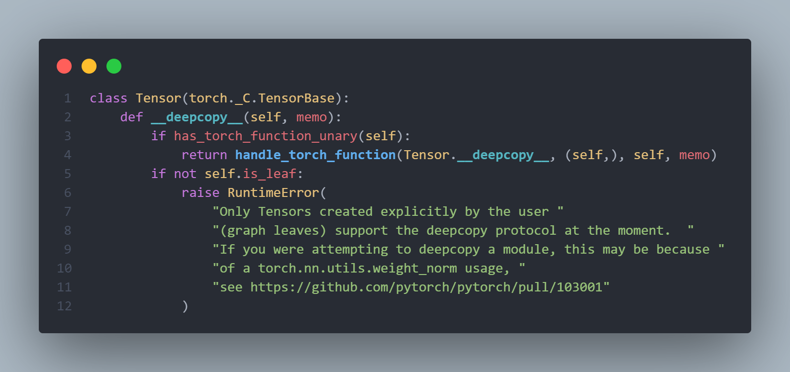
跳转到torch/_C/__init__.pyi #L1880 可以看到：
1 | # Defined in torch/csrc/autograd/python_variable.cpp |
torch.tensor：pytorch的一个函数，用于将数据变为张量形式的数据，例如list, tuple, NumPy ndarray, scalar等。同样，torch.tensor的底层实现也是C++代码，具体实现位于torch_C_VariableFunctions.pyi文件。
后续将不再区分Tensor和tensor，主要用小写tensor表示张量这个数据类型（数据结构）。
张量的作用
tensor是pytorch中最核心的数据结构，用于表达各类数据，如输入数据、模型的参数、模型的特征图、模型的输出等。这里边有一个很重要的数据，就是模型的参数。对于模型的参数，我们需要更新它们，而更新操作需要记录梯度，梯度的记录功能正是被张量所实现的（求梯度是autograd实现的）。
张量的历史演变
讲tensor结构之前，还需要介绍一小段历史，那就是Variable与Tensor。在0.4.0版本之前，Tensor需要经过Variable的包装才能实现自动求导。从0.4.0版本开始，torch.Tensor与torch.autograd.Variable合并，torch.Tensor拥有了跟踪历史操作的功能。虽然Variable仍可用，但Variable返回值已经是一个Tensor（原来返回值是Variable），所以今后无需再用Variable包装Tensor。
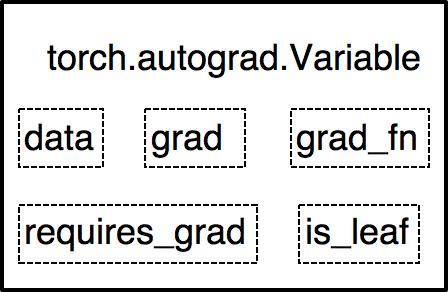
- data: 保存的是具体数据，即被包装的Tensor；
- grad: 对应于data的梯度，形状与data一致；
- grad_fn: 记录创建该Tensor时用到的Function，该Function在反向传播计算中使用，因此是自动求导的关键；
- requires_grad: 指示是否计算梯度；
- is_leaf: 指示节点是否为叶子节点，为叶子结点时，反向传播结束，其梯度仍会保存，非叶子结点的梯度被释放，以节省内存。
从Variable的主要属性中可以发现，除了data外，grad，grad_fn，is_leaf和requires_grad都是为计算梯度服务，所以Variable在torch.autogard包中自然不难理解。
但是我们的数据载体是tensor，每次需要自动求导，都要用Variable包装，这明显太过繁琐，于是PyTorch从0.4.0版将torch.Tensor与torch.autograd.Variable合并。
张量的结构
Tensor主要有以下八个主要属性，data，dtype，shape，device，grad，grad_fn，is_leaf，requires_grad。
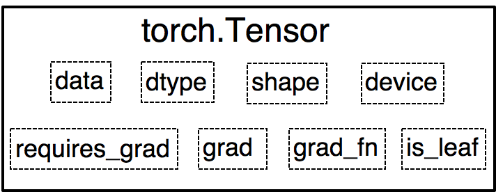
- data：多维数组，最核心的属性，其他属性都是为其服务的;
- dtype：多维数组的数据类型，tensor数据类型如下，常用到的三种已经用红框标注出来；
- shape：多维数组的形状;
- device: tensor所在的设备，cpu或cuda;
- grad，grad_fn，is_leaf和requires_grad就与Variable一样，都是梯度计算中所用到的。
张量的相关函数
接下来开始学习各类张量的api，主要参考官方文档，通过右边目录栏可以看出有以下几个部分。
- Tensors
- Generators
- Random sampling
- Serialization
- Parallelism
- Locally disabling gradient computation
- Math operations
- Utilities
- Symblic Numbers
- Export Path
- Control Flow
- Optimizations
- Operator Tags
里面有上百个函数，这里只挑高频使用的进行介绍。
张量的创建
直接创建
torch.tensor(data, dtype=None, device=None, requires_grad=False, pin_memory=False)
- data(array_like) - tensor的初始数据，可以是list, tuple, numpy array, scalar或其他类型。
- dtype(torch.dtype, optional) - tensor的数据类型，如torch.uint8, torch.float, torch.long等
- device (torch.device, optional) – 决定tensor位于cpu还是gpu。如果为None，将会采用默认值，默认值在torch.set_default_tensor_type()中设置，默认为 cpu。
- requires_grad (bool, optional) – 决定是否需要计算梯度。
- pin_memory (bool, optional) – 是否将tensor存于锁页内存。这与内存的存储方式有关，通常为False。
1 | import torch |
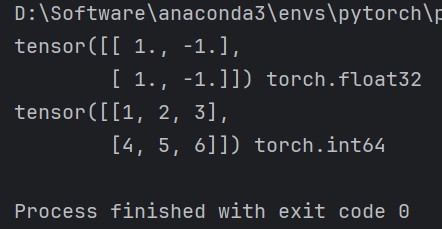
可以看到t_from_list是float32类型，而t_from_array是int64类型。如果想让tensor是其他数据类型，可以在创建tensor时使用dtype参数确定数据类型。
1 | import torch |
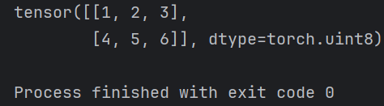
torch.from_numpy
还有一种常用的通过numpy创建tensor方法是torch.from_numpy()。这里需要特别注意的是，创建的tensor和原array共享同一块内存（The returned tensor and ndarray share the same memory. ），即当改变array里的数值，tensor中的数值也会被改变；改变tensor的数值，array里的数值也会被改变。
1 | import torch |
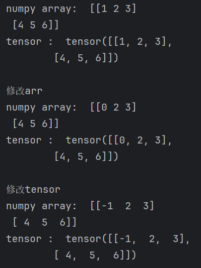
依数值创建
torch.zeros(size, out=None, dtype=None, layout=torch.strided, device=None, requires_grad=False)
功能：依给定的size创建一个全0的tensor，默认数据类型为torch.float32（也称为torch.float）。
主要参数：
- layout(torch.layout, optional) - 参数表明张量在内存中采用何种布局方式。常用的有torch.strided, torch.sparse_coo等。
- out(tensor, optional) - 输出的tensor，即该函数返回的tensor可以通过out进行赋值。
1 | import torch |
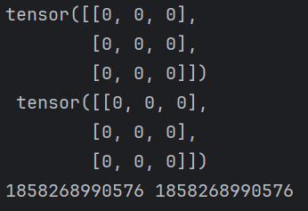
可以看到，通过torch.zeros创建的张量不仅赋给了t，同时赋给了o_t，并且这两个张量是共享同一块内存，只是变量名不同。
torch.zeros_like(input, dtype=None, layout=None, device=None, requires_grad=False)
功能：依input的size创建全0的tensor。
主要参数：
- input(Tensor) - 创建的tensor与intput具有相同的形状。
1 | import torch |
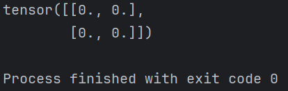
除了创建全0还有创建全1的tensor，使用方法是一样的，这里就不赘述。
torch.ones(*size, out=None, dtype=None, layout=torch.strided, device=None, requires_grad=False)
功能：依给定的size创建一个全1的tensor。
torch.ones_like(input, dtype=None, layout=None, device=None, requires_grad=False)
功能：依input的size创建全1的tensor。
torch.full(size, fill_value, out=None, dtype=None, layout=torch.strided, device=None, requires_grad=False)
功能：依给定的size创建一个值全为fill_value的tensor。
主要参数:
- siz (int…) - tensor的形状。
- fill_value - 所创建tensor的值
- out(tensor, optional) - 输出的tensor，即该函数返回的tensor可以通过out进行赋值。
1 | import torch |
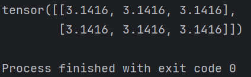
torch.full_like(input, fill_value, out=None, dtype=None, layout=torch.strided, device=None, requires_grad=False)
torch.full_like之于torch.full等同于torch.zeros_like之于torch.zeros，因此不再赘述。
torch.arange(start=0, end, step=1, out=None, dtype=None, layout=torch.strided, device=None, requires_grad=False)
功能：创建等差的1维张量，长度为 (end-start)/step，需要注意数值区间为[start, end)。
主要参数：
start (Number) – 数列起始值，默认值为0。the starting value for the set of points. Default: 0.
end (Number) – 数列的结束值。
step (Number) – 数列的等差值，默认值为1。
out (Tensor, optional) – 输出的tensor，即该函数返回的tensor可以通过out进行赋值。
1 | import torch |
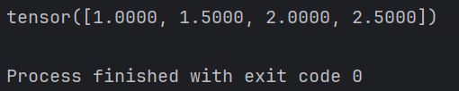
torch.linspace(start, end, steps=100, out=None, dtype=None, layout=torch.strided, device=None, requires_grad=False)
功能：创建均分的1维张量，长度为steps，区间为[start, end]。
主要参数：
start (float) – 数列起始值。
end (float) – 数列结束值。
steps (int) – 数列长度。
1 | import torch |
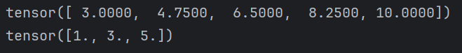
torch.logspace(start, end, steps=100, base=10.0, out=None, dtype=None, layout=torch.strided, device=None, requires_grad=False)
功能：创建对数均分的1维张量，长度为steps, 底为base。
主要参数：
start (float) – 确定数列起始值为base^start
end (float) – 确定数列结束值为base^end
steps (int) – 数列长度。
base (float) - 对数函数的底，默认值为10，此参数是在pytorch 1.0.1版本之后加入的。
1 | import torch |
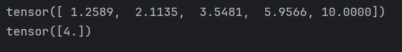
torch.eye(n, m=None, out=None, dtype=None, layout=torch.strided, device=None, requires_grad=False)
功能：创建单位对角矩阵。
主要参数：
n (int) - 矩阵的行数
m (int, optional) - 矩阵的列数，默认值为n，即默认创建一个方阵
1 | import torch |
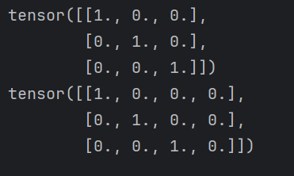
torch.empty(size, out=None, dtype=None, layout=torch.strided, device=None, requires_grad=False, pin_memory=False)
功能：依size创建“空”张量，这里的“空”指的是不会进行初始化赋值操作。
主要参数：
size (int…) - 张量维度
pin_memory (bool, optional) - pinned memory 又称page locked memory，即锁页内存，该参数用来指示是否将tensor存于锁页内存，通常为False，若内存足够大，建议设置为True，这样在转到GPU时会快一些。
torch.empty_like(input, dtype=None, layout=None, device=None, requires_grad=False)
功能：torch.empty_like之于torch.empty等同于torch.zeros_like之于torch.zeros，因此不再赘述。
torch.empty_strided(size, stride, dtype=None, layout=None, device=None, requires_grad=False, pin_memory=False)
功能：依size创建“空”张量，这里的“空”指的是不会进行初始化赋值操作。
主要参数：
stride (tuple of python:ints) - 张量存储在内存中的步长，是设置在内存中的存储方式。
size (int…) - 张量维度
pin_memory (bool, optional) - 是否存于锁页内存。
依概率分布创建
torch.normal(mean, std, out=None)
功能：为每一个元素以给定的mean和std用高斯分布生成随机数
主要参数：
- mean (Tensor or Float) - 高斯分布的均值，
- std (Tensor or Float) - 高斯分布的标准差
特别注意事项：
- mean和std的取值分别有2种，共4种组合，不同组合产生的效果也不同，需要注意
- mean为张量，std为张量，torch.normal(mean, std, out=None)，每个元素从不同的高斯分布采样，分布的均值和标准差由mean和std对应位置元素的值确定；
- mean为张量，std为标量，torch.normal(mean, std=1.0, out=None)，每个元素采用相同的标准差，不同的均值；
- mean为标量，std为张量，torch.normal(mean=0.0, std, out=None)， 每个元素采用相同均值，不同标准差；
- mean为标量，std为标量，torch.normal(mean, std, size, *, out=None) ，从一个高斯分布中生成大小为size的张量；
1 | import torch |
mean: tensor([ 1., 2., 3., 4., 5., 6., 7., 8., 9., 10.]),
std: tensor([1.0000, 0.9000, 0.8000, 0.7000, 0.6000, 0.5000, 0.4000, 0.3000, 0.2000,
0.1000]),
normal: tensor([ 2.4957, 2.5879, 3.1640, 4.5038, 5.5685, 5.6305, 8.0488, 8.0437,
8.7636, 10.1586])
2.4957是通过均值为1，标准差为1的高斯分布采样得来的，2.5879是通过均值为2，标准差为0.9的高斯分布采样得来，以此类推。
torch.rand(size, out=None, dtype=None, layout=torch.strided, device=None, requires_grad=False)
功能：在区间[0, 1)上，生成均匀分布。
主要参数：
- size (int…) - 创建的张量的形状
torch.rand_like(input, dtype=None, layout=None, device=None, requires_grad=False)
torch.rand_like之于torch.rand等同于torch.zeros_like之于torch.zeros，因此不再赘述。
torch.randint(low=0, high, size, out=None, dtype=None, layout=torch.strided, device=None, requires_grad=False)
功能：在区间[low, high)上，生成整数的均匀分布。
主要参数：
- low (int, optional) - 下限。
- high (int) – 上限，主要是开区间。
- size (tuple) – 张量的形状。
1 | import torch |
tensor([[7, 4],
[5, 8]])
torch.randint_like(input, low=0, high, dtype=None, layout=torch.strided, device=None, requires_grad=False)
功能：torch.randint_like之于torch.randint等同于torch.zeros_like之于torch.zeros，因此不再赘述。
torch.randn(size, out=None, dtype=None, layout=torch.strided, device=None, requires_grad=False)
功能：生成形状为size的标准正态分布张量。
主要参数：
- size (int…) - 张量的形状
torch.randn_like(input, dtype=None, layout=None, device=None, requires_grad=False)
功能：torch.rafndn_like之于torch_randn等同于torch.zeros_like之于torch.zeros，因此不再赘述。
torch.randperm(n, out=None, dtype=torch.int64, layout=torch.strided, device=None, requires_grad=False)
功能：生成从0到n-1的随机排列。perm == permutation
torch.bernoulli(input, *, generator=None, out=None)
功能：以input的值为概率，生成伯努利分布（0-1分布，两点分布）。
主要参数：
- input (Tensor) - 分布的概率值，该张量中的每个值的值域为[0-1]
1 | import torch |
probability:
tensor([[0.3029, 0.9397, 0.0408],
[0.1897, 0.7448, 0.8998],
[0.1850, 0.2088, 0.1014]]),
bernoulli_tensor:
tensor([[0., 1., 0.],
[0., 1., 1.],
[0., 0., 0.]])
张量的操作
cat |
将多个张量拼接在一起，例如多个特征图的融合可用。 |
|---|---|
concat |
同cat, 是cat()的别名。 |
conj |
返回共轭复数。 |
chunk |
将tensor在某个维度上分成n份。 |
dsplit |
类似numpy.dsplit().， 将张量按索引或指定的份数进行切分。 |
column_stack |
水平堆叠张量。即第二个维度上增加，等同于torch.hstack。 |
dstack |
沿第三个轴进行逐像素（depthwise）拼接。 |
gather |
高级索引方法，目标检测中常用于索引bbox。在指定的轴上，根据给定的index进行索引。强烈推荐看example。 |
hsplit |
类似numpy.hsplit()，将张量按列进行切分。若传入整数，则按等分划分。若传入list，则按list中元素进行索引。例如：[2, 3] and dim=0 would result in the tensors input[:2], input[2:3], and input[3:]. |
hstack |
水平堆叠张量。即第二个维度上增加，等同于torch.column_stack。 |
index_select |
在指定的维度上，按索引进行选择数据，然后拼接成新张量。可知道，新张量的指定维度上长度是index的长度。 |
masked_select |
根据mask（0/1, False/True 形式的mask）索引数据，返回1-D张量。 |
movedim |
移动轴。如0，1轴交换：torch.movedim(t, 1, 0) . |
moveaxis |
同movedim。Alias for torch.movedim().（这里发现pytorch很多地方会将dim和axis混用，概念都是一样的。） |
narrow |
变窄的张量？从功能看还是索引。在指定轴上，设置起始和长度进行索引。例如：torch.narrow(x, 0, 0, 2)， 从第0个轴上的第0元素开始，索引2个元素。x[0:0+2, …] |
nonzero |
返回非零元素的index。torch.nonzero(torch.tensor([1, 1, 1, 0, 1])) 返回tensor([[ 0], [ 1], [ 2], [ 4]])。建议看example，一看就明白，尤其是对角线矩阵的那个例子，太清晰了。 |
permute |
交换轴。 |
reshape |
变换形状。 |
row_stack |
按行堆叠张量。即第一个维度上增加，等同于torch.vstack。Alias of torch.vstack(). |
scatter |
scatter_(dim, index, src, reduce=None) → Tensor。将src中数据根据index中的索引按照dim的方向填进input中。这是一个十分难理解的函数，其中index是告诉你哪些位置需要变，src是告诉你要变的值是什么。这个就必须配合例子讲解，请跳转到本节底部进行学习。 |
scatter_add |
同scatter一样，对input进行元素修改，这里是 +=， 而scatter是直接替换。 |
split |
按给定的大小切分出多个张量。例如：torch.split(a, [1,4])； torch.split(a, 2) |
squeeze |
移除张量为1的轴。如t.shape=[1, 3, 224, 224]. t.squeeze().shape -> [3, 224, 224] |
stack |
在新的轴上拼接张量。与hstack\vstack不同，它是新增一个轴。默认从第0个轴插入新轴。 |
swapaxes |
Alias for torch.transpose().交换轴。 |
swapdims |
Alias for torch.transpose().交换轴。 |
t |
转置。 |
take |
取张量中的某些元素，返回的是1D张量。torch.take(src, torch.tensor([0, 2, 5]))表示取第0,2,5个元素。 |
take_along_dim |
取张量中的某些元素，返回的张量与index维度保持一致。可搭配torch.argmax(t)和torch.argsort使用，用于对最大概率所在位置取值，或进行排序，详见官方文档的example。 |
tensor_split |
切分张量，核心看indices_or_sections变量如何设置。 |
tile |
将张量重复X遍，X遍表示可按多个维度进行重复。例如：torch.tile(y, (2, 2)) |
transpose |
交换轴。 |
unbind |
移除张量的某个轴，并返回一串张量。如[[1], [2], [3]] —> [1], [2], [3] 。把行这个轴拆了。 |
unsqueeze |
增加一个轴，常用于匹配数据维度。 |
vsplit |
垂直切分。 |
vstack |
垂直堆叠。 |
where |
根据一个是非条件，选择x的元素还是y的元素，拼接成新张量。看案例可瞬间明白。 |
scatter_
scatter是将input张量中的部分值进行替换。公式如下：
1 | self[index[i][j][k]][j][k] = src[i][j][k] # if dim == 0 |
设计的两个核心问题：
- input哪个位置需要替换？
- 替换成什么？
答：
- 从公式可知道，依次从index中找到元素放到dim的位置，就是input需要变的地方。
- 变成什么呢？ 从src中找，src中与index一样位置的那个元素值放到input中。
案例1：
1 | src = torch.arange(1, 11).reshape((2, 5)) |
dim=0, 所以行号跟着index的元素走。其它跟index的索引走。
第一步：找到index的第一个元素index[0, 0]是0， 那么把src[0, 0]（是1）放到input[0, 0]
第二步：找到index的第二个元素index[0, 1]是1， 那么把src[0, 1]（是2）放到input[1, 1]
第三步：找到index的第三个元素index[0, 2]是2， 那么把src[0, 2]（是3）放到input[2, 2]
第四步：找到index的第四个元素index[0, 3]是0， 那么把src[0, 3]（是4）放到input[0, 3]
案例2：
1 | src = torch.arange(1, 11).reshape((2, 5)) |
dim=1：告诉input（零矩阵）的索引，沿着列进行索引，行根据index走。 index：2*3，告诉input（零矩阵），你的哪些行是要被替换的。 src：input要替换成什么呢？从src里找，怎么找？通过index的索引对应的找。
第一步：找到index的第一个元素index[0, 0]是0， 那么把src[0, 0]（是1）放到input[0, 0]
第二步：找到index的第二个元素index[0, 1]是2， 那么把src[0, 1]（是2）放到input[0, 2]
第三步：找到index的第三个元素index[0, 2]是4， 那么把src[0, 2]（是3）放到input[0, 4]
第四步：找到index的第四个元素index[1, 0]是1， 那么把src[1, 0]（是6）放到input[1, 1]
第五步：找到index的第五个元素index[1, 1]是2， 那么把src[1, 1]（是7）放到input[1, 2]
第六步：找到index的第六个元素index[1, 2]是3， 那么把src[1, 2]（是8）放到input[1, 3]
这里可以看到
- index的元素是决定input的哪个位置要变
- 变的值是从src上对应于index的索引上找。可以看到src的索引与index的索引保持一致的
案例3：one-hot的生成
1 | label = torch.arange(3).view(-1, 1) |
第一步：找到index的第一个元素index[0, 0]是0， 那么把src[0, 0]（是1）放到input[0, 0]
第二步：找到index的第二个元素index[1, 0]是1， 那么把src[1, 0]（是1）放到input[1, 1]
第三步：找到index的第三个元素index[2, 0]是2， 那么把src[2, 0]（是1）放到input[2, 2]
（one-hot的案例不利于理解scater函数，因为它的行和列是一样的（），其实input[x, y] 中的x,y是有区别的，x是根据index走，y是根据index的元素值走的，而具体的值是根据src的值。）
张量的随机种子
随机种子（random seed）是编程语言中基础的概念，大多数编程语言都有随机种子的概念，它主要用于实验的复现。针对随机种子pytorch也有一些设置函数。
seed |
获取一个随机的随机种子。Returns a 64 bit number used to seed the RNG. |
|---|---|
manual_seed |
手动设置随机种子，建议设置为42，这是近期一个玄学研究。说42有效的提高模型精度。当然大家可以设置为你喜欢的，只要保持一致即可。 |
initial_seed |
返回初始种子。 |
get_rng_state |
获取随机数生成器状态。Returns the random number generator state as a torch.ByteTensor. |
set_rng_state |
设定随机数生成器状态。这两怎么用暂时未知。Sets the random number generator state. |
以上均是设置cpu上的张量随机种子，在cuda上是另外一套随机种子，如torch.cuda.manual_seed_all(seed)， 这些到cuda模块再进行介绍，这里只需要知道cpu和cuda上需要分别设置随机种子。
张量的数学操作
张量还提供大量数学操作，有快一百个函数，这里就不再一一分析，只需要知道有哪几大类，用到的时候来查即可。
- Pointwise Ops： 逐元素的操作，如abs, cos, sin, floor, floor_divide, pow等
- Reduction Ops: 减少元素的操作，如argmax, argmin, all, any, mean, norm, var等
- Comparison Ops：对比操作， 如ge, gt, le, lt, eq, argsort, isnan, topk,
- Spectral Ops: 谱操作，如短时傅里叶变换等各类信号处理的函数。
- Other Operations：其它， clone， diag，flip等
- BLAS and LAPACK Operations：BLAS（Basic Linear Algebra Subprograms）基础线性代数）操作。如, addmm, dot, inner, svd等。
计算图
参考文献：Computational graphs and gradient flows — Simple English Machine Learning documentation
计算图（Computational Graphs）是一种描述运算的“语言”，它由节点(Node)和边(Edge)构成。
根据官网介绍，节点表示数据和计算操作，边仅表示数据流向
- Each node in this graph represents a particular computation or operation, and edges of this graph consist of references between nodes.
- A Node represents a particular computation or operation and is represented in Python using the torch.fx.Node class. Edges between nodes are represented as direct references to other nodes via the args property of the Node class.
记录所有节点和边的信息，可以方便地完成自动求导，假设有这么一个计算：
将每一步细化为：
得到计算图如下：
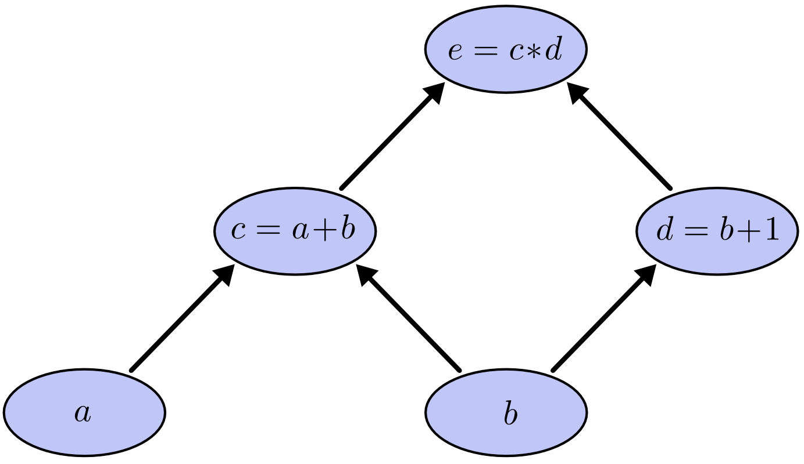
有了计算图，我们可以尝试进行forward，带入a,b的输入数据，就得到结果e。
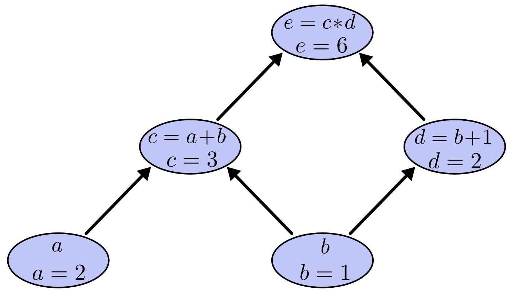
同样的，如果需要获取各参数的导数，也可以方便地获得。
计算图求导
根据偏微分与链式求导法则相关知识，我们可以得到各参数导数的计算公式。比如在如下计算图中：
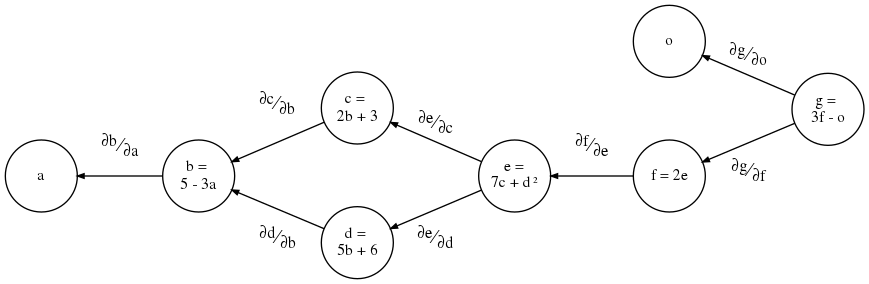
我们要求
我们发现，所有的偏微分计算所需要用到的数据都是基于a和o的，这里，a和o就称为叶子结点。
叶子节点
叶子结点是最基础结点，其数据不是由运算生成的，因此是整个计算图的基石，是不可轻易”修改“的。而最终计算得到的y就是根节点，就像一棵树一样，叶子在上面，根在下面。
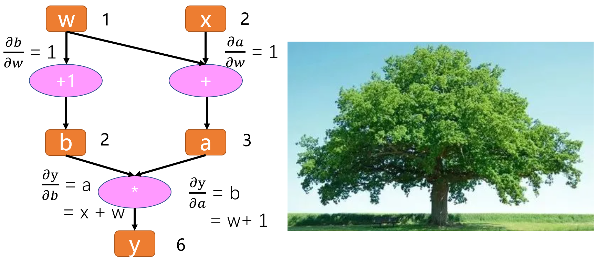
张量有一个属性是is_leaf, 就是用来指示一个张量是否为叶子结点的属性。
我们通过代码，实现以上运算，并查看该计算图的叶子结点和梯度。
1 | import torch |
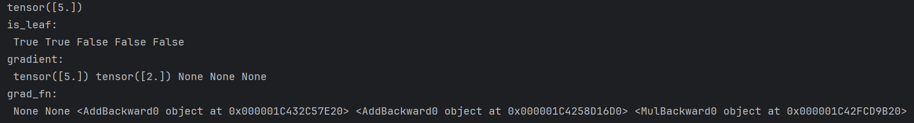
由结果可知y就不是叶子结点，因为它是由结点w和结点x通过乘法运算得到的。
补充知识点1：非叶子结点在梯度反向传播结束后释放
只有叶子节点的梯度得到保留，中间变量的梯度默认不保留；在pytorch中，非叶子结点的梯度在反向传播结束之后就会被释放掉，如果需要保留的话可以对该结点设置retain_grad()
补充知识点2：grad_fn是用来记录创建张量时所用到的运算，在链式求导法则中会使用到。
在 PyTorch 中，grad_fn 是一个属性，用于表示创建该张量的函数。每个由操作创建的张量都有一个 grad_fn 属性，该属性指向一个 Function 对象，该对象记录了创建该张量的操作。这个属性在自动求导过程中非常重要，因为它帮助 PyTorch 构建计算图，从而能够进行反向传播计算梯度。
例如，如果你有一个张量 y 是通过某个操作从张量 x 创建的，那么 y.grad_fn 就会指向那个操作的 Function 对象。通过这个 Function 对象，PyTorch 可以追踪到 x，并在调用 backward() 时计算梯度。
需要注意的是，只有通过操作创建的张量才会有 grad_fn 属性，直接创建的张量（例如通过 torch.tensor()）的 grad_fn 属性为 None。这是因为直接创建的张量被认为是计算图中的叶子节点，它们的梯度需要显式设置 requires_grad=True 才会被计算和存储。
静态图与动态图
计算图根据计算图的搭建方式可以划分为静态图和动态图。pytorch是典型的动态图，TensorFlow是静态图（TF 2.x 也支持动态图模式）。
区分方法：
- 先搭建计算图，再运算，这就是静态图机制。而在运算的同时去搭建计算图，这就是动态图机制。
- 在运算过程中，计算图可变动的是动态图；计算图不可变，是静止的，就是静态图。
动态图优点：
- 易理解：程序按照编写命令的顺序进行执行
- 灵活性：可依据模型运算结果来决定计算图
静态图优点：
- 高效性：优化计算图，提高运算效率（但在gpu时代，这一点对于初学者而言可忽略不计）
缺点：
- 晦涩性：需要学习 seesion, placeholder等概念，调试困难
Autograd
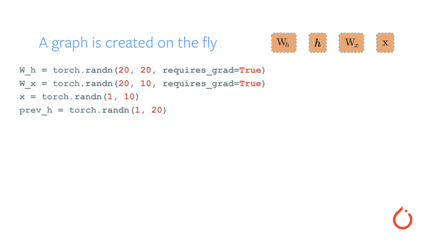
在进行h2h、i2h、next_h、loss的计算过程中，逐步搭建计算图，同时针对每一个变量（tensor）都存储计算梯度所必备的grad_fn，便于自动求导系统使用。当计算到根节点后，在根节点调用.backward()函数，即可自动反向传播计算计算图中所有节点的梯度。这就是pytorch自动求导机制。
autograd 官方定义
官方文档中对autograd的解释如下：
Conceptually, autograd keeps a record of data (tensors) and all executed operations (along with the resulting new tensors) in a directed acyclic graph (DAG) consisting of Function objects. In this DAG, leaves are the input tensors, roots are the output tensors. By tracing this graph from roots to leaves, you can automatically compute the gradients using the chain rule.
In a forward pass, autograd does two things simultaneously:
- run the requested operation to compute a resulting tensor
- maintain the operation’s gradient function in the DAG.
The backward pass kicks off when .backward() is called on the DAG root. autograd then:
- computes the gradients from each .grad_fn,
- accumulates them in the respective tensor’s .grad attribute
- using the chain rule, propagates all the way to the leaf tensors.
from： https://pytorch.org/tutorials/beginner/basics/autogradqs_tutorial.html#more-on-computational-graphs
划重点：
- 自动求导机制通过有向无环图（directed acyclic graph ，DAG）实现
- 在DAG中，记录数据（对应tensor.data）以及操作（对应tensor.grad_fn）
- 操作在pytorch中统称为Function，如加法、减法、乘法、ReLU、conv、Pooling等，统统是Function
autograd 的使用
autograd的使用有很多方法，这里重点讲解一下三个，并在最后汇总一些知识点。更多API推荐阅读官方文档
- torch.autograd.backward
- torch.autograd.grad
- torch.autograd.Function
torch.autograd.backward
backward函数是使用频率最高的自动求导函数，没有之一。99%的训练代码中都会用它进行梯度求导，然后更新权重。
torch.autograd.backward(tensors, grad_tensors=None, retain_graph=None, create_graph=False, grad_variables=None, inputs=None)
- tensors (Sequence[Tensor] or Tensor) – 用于求导的张量。
- grad_tensors (Sequence[Tensor or None] or Tensor, optional) – 雅各比向量积中使用，详细作用请看代码演示。
- retain_graph (bool, optional) – 是否需要保留计算图。pytorch的机制是在方向传播结束时，计算图释放以节省内存。如果需要多次求导，则在执行backward()时，retain_graph=True。
- create_graph (bool, optional) – 是否创建计算图，用于高阶求导。
- inputs (Sequence[Tensor] or Tensor, optional) – Inputs w.r.t. which the gradient be will accumulated into .grad. All other Tensors will be ignored. If not provided, the gradient is accumulated into all the leaf Tensors that were used to compute the attr::tensors.
补充说明：我们使用时候都是在张量上直接调用.backward()函数，但这里却是torch.autograd.backward，为什么不一样呢？ 其实Tensor.backward()接口内部调用了autograd.backward。
使用示例
retain_grad参数使用
对比两个代码段，仔细阅读pytorch报错信息。
1 | ##### retain_graph=True |
1 | tensor([5.]) |
运行上面代码段可以看到是正常的，下面这个代码段就会报错，报错信息提示非常明确：Trying to backward through the graph a second time。并且还给出了解决方法： Specify retain_graph=True if you need to backward through the graph a second time 。
1 | ##### retain_graph=False |
1 | tensor([5.]) |
grad_tensors使用
1 | w = torch.tensor([1.], requires_grad=True) |
1 | tensor([9.]) |
torch.autograd.grad
torch.autograd.grad(outputs, inputs, grad_outputs=None, retain_graph=None, create_graph=False, only_inputs=True, allow_unused=False)
功能：计算outputs对inputs的导数
主要参数：
- outputs (sequence of Tensor) – 用于求导的张量，如loss
- inputs (sequence of Tensor) – 所要计算导数的张量
- grad_outputs (sequence of Tensor) – 雅克比向量积中使用。
- retain_graph (bool, optional) – 是否需要保留计算图。pytorch的机制是在方向传播结束时，计算图释放以节省内存。大家可以尝试连续使用loss.backward()，就会报错。如果需要多次求导，则在执行backward()时，retain_graph=True。
- create_graph (bool, optional) – 是否创建计算图，用于高阶求导。
- allow_unused (bool, optional) – 是否需要指示，计算梯度时未使用的张量是错误的。
1 | import torch |
1 | (tensor([6.], grad_fn=<MulBackward0>),) |
torch.autograd.Function
有的时候，想要实现自己的一些操作（op），如特殊的数学函数、pytorch的module中没有的网络层，那就需要自己写一个Function，在Function中定义好forward的计算公式、backward的计算公式，然后将这些op组合到模型中，模型就可以用autograd完成梯度求取。
这个概念还是很抽象，平时用得不多，但是自己想要自定义网络时，常常需要自己写op，那么它就很好用了。以下是四个案例：
案例1： exp
案例1：来自 https://pytorch.org/docs/stable/autograd.html#function
假设需要一个计算指数的功能，并且能组合到模型中，实现autograd，那么可以这样实现
第一步：继承Function
第二步：实现forward
第三步：实现backward
注意事项：
- forward和backward函数第一个参数为ctx，它的作用类似于类函数的self一样，更详细解释可参考如下： In the forward pass we receive a Tensor containing the input and return a Tensor containing the output. ctx is a context object that can be used to stash information for backward computation. You can cache arbitrary objects for use in the backward pass using the ctx.save_for_backward method.（在前向传播中，我们接收一个包含输入的张量，并返回一个包含输出的张量。
ctx是一个上下文对象，可以用来存储反向传播计算所需的信息。你可以使用ctx.save_for_backward方法缓存任意对象，以便在反向传播中使用。） - backward函数返回的参数个数与forward的输入参数个数相同, 即，传入该op的参数，都需要给它们计算对应的梯度。
1 | import torch |
1 | tensor([2.7183], grad_fn=<ExpBackward>) |
从代码里可以看到，y这个张量的 grad_fn 是 ExpBackward，正是我们自己实现的函数，这表明当y求梯度时，会调用ExpBackward这个函数进行计算，这也是张量的grad_fn的作用所在。
案例2：为梯度乘以一定系数 Gradcoeff
案例2来自： https://zhuanlan.zhihu.com/p/321449610
功能是反向传梯度时乘以一个自定义系数
1 | class GradCoeff(Function): |
1 | tensor([4.], grad_fn=<PowBackward0>) |
在这里需要注意 backward函数返回的参数个数与forward的输入参数个数相同
即，传入该op的参数，都需要给它们计算对应的梯度。
案例3：勒让德多项式
假设多项式为：
1 | import torch |
1 | 127.0 |
案例4：手动实现2D卷积
案例来自：https://pytorch.org/tutorials/intermediate/custom_function_conv_bn_tutorial.html
案例本是卷积与BN的融合实现，此处仅观察Function的使用，更详细的内容，十分推荐阅读原文章
下面看如何实现conv_2d的
1 | import torch |
1 | 梯度检查: True |
autograd相关的知识点
autograd使用过程中还有很多需要注意的地方，在这里做个小汇总。
- 知识点一：梯度不会自动清零
- 知识点二： 依赖于叶子结点的结点，requires_grad默认为True
- 知识点三： 叶子结点不可执行in-place
- 知识点四： detach 的作用
- 知识点五： with torch.no_grad()的作用
知识点一：梯度不会自动清零
1 | import torch |
1 | tensor([5.]) |
知识点二：依赖于叶子结点的结点，requires_grad默认为True
结点的运算依赖于叶子结点的话，它一定是要计算梯度的，因为叶子结点梯度的计算是从后向前传播的，因此与其相关的结点均需要计算梯度。
1 | import torch |
1 | True True True |
知识点三：叶子张量不可以执行in-place操作
叶子结点不可执行in-place，因为计算图的backward过程都依赖于叶子结点的计算，可以回顾计算图当中的例子，所有的偏微分计算所需要用到的数据都是基于w和x（叶子结点），因此叶子结点不允许in-place操作。
注：In-place 操作是指直接对变量进行修改，而不创建新的变量。在 PyTorch 中，in-place 操作通常会在函数名后加上一个下划线 _，例如 add_()、mul_() 等。
以下是一些常见的 in-place 操作示例：
1 | import torch |
需要注意的是，in-place 操作会修改原始张量的值，因此在某些情况下可能会导致意外的结果。例如，如果一个张量在计算图中被多次使用，in-place 操作可能会影响梯度计算。
为了避免这种情况，通常建议尽量避免使用 in-place 操作，除非你非常确定这样做是安全的。
1 | a = torch.ones((1, )) |
1 | 2361561191752 tensor([1.]) |
1 | w = torch.tensor([1.], requires_grad=True) |
1 | --------------------------------------------------------------------------- |
知识点四：detach 的作用
通过以上知识，我们知道计算图中的张量是不能随便修改的，否则会造成计算图的backward计算错误，那有没有其他方法能修改呢？当然有，那就是detach()
detach的作用是：从计算图中剥离出“数据”，并以一个新张量的形式返回，并且新张量与旧张量共享数据，简单的可理解为做了一个别名。 请看下例的w，detach后对w_detach修改数据，w同步地被改为了999
1 | w = torch.tensor([1.], requires_grad=True) |
1 | tensor([999.], requires_grad=True) |
知识点五：with torch.no_grad()的作用
autograd自动构建计算图过程中会保存一系列中间变量，以便于backward的计算，这就必然需要花费额外的内存和时间。
而并不是所有情况下都需要backward，例如推理的时候，因此可以采用上下文管理器——torch.no_grad()来管理上下文，让pytorch不记录相应的变量，以加快速度和节省空间。
详见：https://pytorch.org/docs/stable/generated/torch.no_grad.html?highlight=no_grad#torch.no_grad
1 | x = torch.tensor([1.], requires_grad=True) |
第三章 PyTorch 数据模块
回顾2.2中的COVID-19分类任务，观察一下数据是如何从硬盘到模型输入的。
倒推过程，模型接收的训练数据是
- data：outputs = model(data)
- data来自train_loader： for data, labels in train_loader:
- train_loader 来自 DataLoader与train_data：train_loader = DataLoader(dataset=train_data, batch_size=2)
- train_data 来自 COVID19Dataset：train_data = COVID19Dataset(root_dir=img_dir, txt_path=path_txt_train, transform=transforms_func)
- COVID19Dataset继承于Dataset：COVID19Dataset(Dataset)
至此，知道整个数据处理过程会涉及pytorch的两个核心——Dataset， DataLoader。
Dataset是一个抽象基类，提供给用户定义自己的数据读取方式，最核心在于getitem中对数据的处理。
DataLoader是pytorch数据加载的核心，其中包括多个功能，如打乱数据，采样机制（实现均衡1:1采样），多进程数据加载，组装成Batch形式等丰富的功能。
本章将围绕着它们两个展开介绍pytorch的数据读取、预处理、加载等功能。
torch.utils.data.Dataset
数据交互模块——Dataset
Dataset的功能
pytorch提供的torch.utils.data.Dataset类是一个抽象基类，供用户继承，编写自己的dataset，实现对数据的读取。在Dataset类的编写中必须要实现的两个函数是getitem和len。
- getitem：需要实现读取一个样本的功能。通常是传入索引（index，可以是序号或key），然后实现从磁盘中读取数据，并进行预处理（包括online的数据增强），然后返回一个样本的数据。数据可以是包括模型需要的输入、标签，也可以是其他元信息，例如图片的路径。getitem返回的数据会在dataloader中组装成一个batch。即，通常情况下是在dataloader中调用Dataset的getitem函数获取一个样本。
- len：返回数据集的大小，数据集的大小也是个最要的信息，它在dataloader中也会用到。如果这个函数返回的是0，dataloader会报错：”ValueError: num_samples should be a positive integer value, but got num_samples=0”。这个报错经常会遇到，这通常是文件路径没写对，导致dataset找不到数据，数据个数为0。
了解Dataset类的概念，下面通过一幅示意图，来理解Dataset与DataLoader的关系。
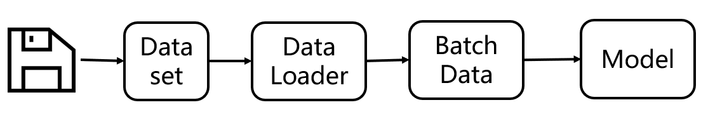
dataset负责与磁盘打交道，将磁盘上的数据读取并预处理好，提供给DataLoader，而DataLoader只需要关心如何组装成批数据，以及如何采样。采样的体现是出现在传入getitem函数的索引，这里采样的规则可以通过sampler由用户自定义，可以方便地实现均衡采样、随机采样、有偏采样、渐进式采样等，这个留在DataLoader中会详细展开。
此处，先分析Dataset如何与磁盘构建联系。
从2.2节的例子中可以看到，我们为COVID19Dataset定义了一个_get_img_info函数，该函数就是用来建立磁盘关系的，在这个函数中收集并处理样本的路径信息、标签信息，存储到一个list中，供getitem函数使用。getitem函数只需要拿到序号，就可获得图片的路径信息、标签信息，接着进行图片预处理，最后返回一个样本信息。
1 | def _get_img_info(self): |
三个Dataset案例
第一个：2.2中的类型。数据的划分及标签在txt中。
第二个：数据的划分及标签在文件夹中体现
第三个：数据的划分及标签在csv中
先看第一部分，输出的是 PIL对象及图像标签，这里可以进入getitem函数看到采用了
img = Image.open(path_img).convert(‘L’)
这行代码使用
PIL库中的 Image.open方法打开图像文件，并将其转换为灰度图像（模式 ‘L’）。path_img是图像文件的路径。
对图片进行了读取，得到了PIL对象，由于transform为None，不对图像进行任何预处理，因此getitem函数返回的图像是PIL对象。
2 (, 1) 2 (, 1)
第二部分是结合DataLoader的使用，这种形式更贴近真实场景，在这里为Dataset设置了一些transform，有图像的缩放，ToTensor， normalize三个方法。因此，getitem返回的图像变为了张量的形式，并且在DataLoader中组装成了batchsize的形式。
batchsize的形式。大家可以尝试修改缩放的大小来观察输出，也可以注释normalize来观察它们的作用。
0 torch.Size([2, 1, 4, 4]) tensor([[[[-0.3569, -0.2863, -0.3333, -0.4118],
[ 0.0196, -0.3098, -0.2941, 0.1059],
[-0.2392, -0.1294, 0.0510, -0.2314],
[-0.1059, 0.4118, 0.4667, 0.0275]]],[[[-0.0431, -0.1216, -0.0980, -0.1373], [[[-0.0431, -0.1216, -0.0980, -0.1373], [-0.0667, -0.2000, -0.0824, -0.2392], [-0.1137, 0.0353, 0.1843, -0.2078], [ 0.0510, 0.3255, 0.3490, -0.0510]]]]) torch.Size([2]) tensor([0, 1]) [ 0.0510, 0.3255, 0.3490, -0.0510]]]]) torch.Size([2]) tensor([0, 1])
关于transform的系列方法以及工作原理，将在本章后半部分讲解数据增强部分再详细展开。
源代码：
1 | import os |